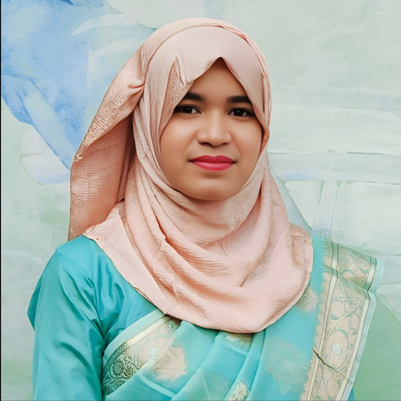

Literature & Systematic Review
Google Scholar/database search, keyword development, article screening, inclusion/exclusion support, literature matrix, synthesis table, and PRISMA-style workflow familiarity.
Aspiring PhD • Oceanography Graduate • Research Support
I support research teams through literature review, field and laboratory data handling, GIS/remote sensing analysis, Python/SPSS-based data processing, manuscript support, and environmental research communication.

About
Farjana Akther Koly is an Oceanography graduate from Bangladesh Maritime University and a current MSc student in Oceanography. Her work connects water quality, coastal ecosystems, river ecosystem health, climate vulnerability, potential fishing zones, and sustainable blue economy research.
She is experienced in literature search, systematic-review-style screening, research data collection, data cleaning, GIS/RS mapping, Python/SPSS-based analysis, technical documentation, proposal support, and manuscript preparation.
Technical Expertise
Google Scholar/database search, keyword development, article screening, inclusion/exclusion support, literature matrix, synthesis table, and PRISMA-style workflow familiarity.
Python, SPSS, R, MATLAB, MS Excel, Origin Pro, Power BI, data cleaning, descriptive analysis, tables, figures, and interpretation.
ArcGIS, ArcGIS Pro, remote sensing data handling, spatial visualization, environmental mapping, exposure and vulnerability mapping.
Zotero/Mendeley support, citation formatting, manuscript formatting, journal guideline preparation, and reference database organization.
Spectrophotometer, CTD, Algal Torch, multiparameter instruments, AAS, environmental sample handling, measurement support, and quality checking.
ESD/course-related assistance, class materials, attendance records, assignment tracking, presentations, and student communication.
Experience
Supports literature search, article screening, research documentation, data organization, Python/SPSS/GIS-based analysis, figure/table preparation, manuscript drafting, and proposal documentation.
Contributes to climate, coastal, and environmental research assignments through literature review, data analysis assistance, technical writing, project briefs, and research communication.
Participated in field and desk-based research activities involving data collection, documentation, reporting support, and multidisciplinary research communication.
Selected Projects
Supported environmental data collection, hydrogeochemical data organization, analysis, interpretation, figure/table preparation, and technical documentation for sustainable water management.
Supported ecosystem assessment through environmental data organization, documentation, indicator interpretation, and research output preparation.
Supported river water quality and ecosystem health research through data handling, analysis support, technical documentation, and research output preparation.
Supported literature review, GIS/RS-based interpretation, environmental data handling, documentation, and climate-related livelihood risk analysis.
Publications & Manuscripts
Sunny, S. K., Koly, F. A., Ahammed, A. A., & Firdaws, S. J. (2024). Bangladesh Maritime Journal, 10(1), 91–107.
DOI: 10.70279/bmj-v1-1097Hasan, Md. A., et al. (2026). Bangladesh Maritime Journal, 10(1), 313–329.
DOI: 10.70279/bmj-v2-1124Climate Change Impacts on Coastal Chattogram of Bangladesh; Marine Spatial Planning and Zoning for Sustainable Blue Economy in Bangladesh EEZ.
Education, Training & Awards
Contact
Connect for environmental research, GIS/remote sensing analysis, water quality studies, coastal ecosystem assessment, manuscript support, and PhD-oriented collaboration.